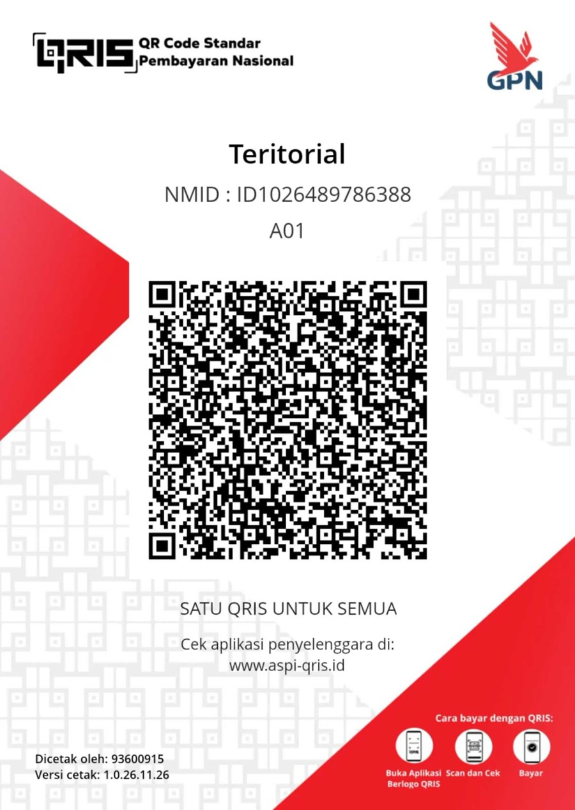

Api berdua
Di mode Bersama, nyalakan api bersama pasangan. Tekan Bakar setiap hari, jaga apinya tetap menyala, dan manfaatkan kesempatan pemulihan kalau ada hari yang terlewat.
Catat pemasukan dan pengeluaran, kelola dompet, utang, aset, dan keuangan berdua dengan api harian. Bisa dipakai tanpa akun dan tanpa internet.
Yang baru
Di mode Bersama, nyalakan api bersama pasangan. Tekan Bakar setiap hari, jaga apinya tetap menyala, dan manfaatkan kesempatan pemulihan kalau ada hari yang terlewat.
Makin panjang hari beruntunmu, makin berubah warna dan aura apinya: Percikan, Api Kecil, Api Berkobar, Api Biru, Api Ungu, Api Zamrud, sampai Api Pelangi di 100 hari. Setiap pencapaian tercatat di kartu api.
Salah catat? Ketuk Edit di Riwayat dan transaksi terbuka di form Catat yang sama, lengkap dengan kategori dan dompetnya. Ada tombol Batal mengubah.
Pilih rentang Dari tanggal dan Sampai tanggal untuk melihat transaksi pada periode itu, lengkap dengan ringkasannya. Filter bisa dihapus dengan satu ketukan.
Dompet, aset, atau hutang bisa disembunyikan sehingga tidak ikut dihitung di ringkasan, lalu ditampilkan lagi kapan saja lewat tombol Tampilkan.
Beri nama pada cadangan, simpan ke berkas, dan pulihkan dari beberapa berkas sekaligus. Anda yang memilih cadangan mana yang dipakai.
Menekan lama tidak lagi memunculkan menu salin atau pilih teks, kecuali di kolom isian. Tampilan jadi lebih bersih dan tidak mengganggu. Saat mencatat, ada tombol Tempel di kolom Jumlah dan Catatan.
Di mode Bersama, keluar atau berpisah harus disetujui kedua pihak, termasuk oleh pembuat buku. Kalau tidak dijawab dalam 7 hari, dianggap setuju.
Saat teman keluar atau buku dihapus, isi buku otomatis dicadangkan ke Google Drive pembuat. Nanti bisa dipulihkan saat membuat buku baru, bahkan bersama teman yang berbeda.
Mode Bersama
Buku Bersama dibuat untuk dua orang. Undang pasangan atau teman lewat email, lalu catat dan lihat keuangan di buku yang sama. Mode Bersama memakai login Google.
Fitur
Sederhana dipakai sehari-hari, tapi cukup lengkap untuk dompet, utang, sampai aset.
Mode Pribadi untuk catatan sendiri, mode Bersama untuk mengelola satu buku berdua.
Catat pemasukan, pengeluaran, dan pindah dana antar dompet atau rekening, lengkap dengan kategori yang bisa Anda atur sendiri.
Pantau utang Anda dan uang yang dipinjamkan, lengkap dengan pembayarannya.
Catat tagihan paylater dan cicilannya supaya tidak terlewat.
Simpan aset seperti crypto, saham, dan emas, lalu lihat untung atau ruginya.
Otomatis ke Drive Anda sendiri, dan bisa dipulihkan setelah aplikasi dipasang ulang.
Lihat semua transaksi per bulan, dompet, atau tanggal, lalu unduh sebagai berkas Excel.
Pilih tema Siang, Malam, atau Liquid Glass, dan pasang foto sendiri sebagai latar yang bisa digeser dan diperbesar.
Data tersimpan di HP Anda. Tidak ada iklan dan tidak ada pelacak pihak ketiga.
Unduh
Setiap perangkat punya halaman sendiri dengan cara memasang, peringatan yang mungkin muncul, dan tombol unduh.
Info penting
Tanya jawab
Ya, Batas Jajan bisa dipakai gratis. Kalau aplikasi ini membantu, Anda boleh mentraktir kami lewat bagian Dukung di bawah.
Tidak. Mencatat, melihat riwayat, dan semua fitur dasar jalan tanpa internet. Internet hanya dipakai untuk login Google, cadangan ke Drive, mode Bersama, dan memeriksa pembaruan.
Tidak wajib. Anda bisa melewati login dan memakai aplikasi tanpa akun. Hanya saja, tanpa login data tidak punya cadangan otomatis.
Masuk dengan akun Google yang sama di HP baru, lalu data dipulihkan dari Google Drive Anda. Anda juga bisa menyimpan cadangan ke berkas dan memulihkannya dari berkas itu.
Satu buku bersama dipakai oleh dua orang. Undang teman atau pasangan lewat email, dan keduanya masuk dengan Google.
Karena aplikasi ini dibagikan di luar Play Store. Pilih Tetap pasang untuk melanjutkan.
Data tersimpan di HP Anda, dan cadangan ke Drive masuk ke folder rahasia aplikasi di akun Google Anda sendiri. Tidak ada iklan dan pelacak pihak ketiga. Selengkapnya ada di Kebijakan Privasi.
Komunitas
Ada saran atau masalah, atau ingin mampir ke akun kami? Silakan.
Batas Jajan kami buat berdua dengan sepenuh hati dan bisa dipakai gratis. Kalau aplikasi ini membantu kamu mengatur uang, traktir kami segelas kopi ya. Berapa pun sangat berarti dan bikin kami makin semangat menambah fitur baru.

Penerima: Teritorial (QRIS, bisa dibayar dari semua e-wallet dan mobile banking)
Unduh foto QRUnduh Batas Jajan, pasang dalam hitungan menit, dan mulai mencatat hari ini.
Pilih Android atau Windows